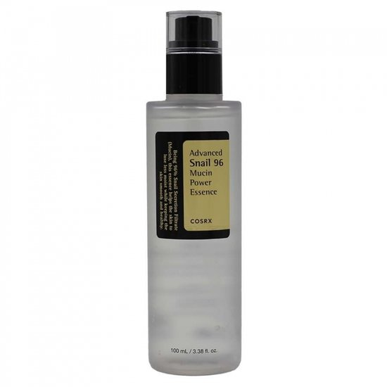
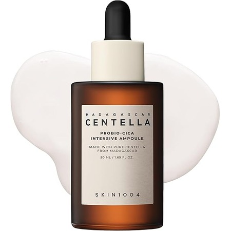
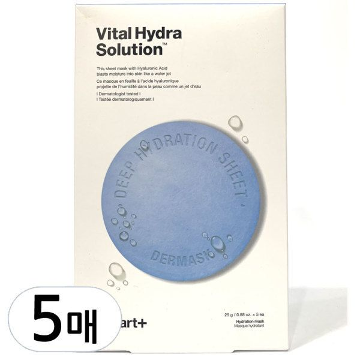

Home › K-Beauty Guide
Best Korean Skincare for Dry Skin
Deep hydration picks
Deep hydration picks. Here are 6 picks worth knowing — real products, honest notes, and roughly what they cost.

Hyaluronic Acid Toner
Deeply hydrating toner that layers well.
Multiple types of hyaluronic acid make this a deeply hydrating toner that layers beautifully. A go-to for dehydrated, tight-feeling skin.
≈ $20.0 (approx) · Ships worldwide
Check price on Amazon →
Advanced Snail 96 Mucin Power Essence
The cult snail-mucin essence for plump hydration.
The cult snail-mucin essence, at 96%, for plump, bouncy hydration and a healthy look. Slightly slippery texture that many use morning and night.
≈ $25.0 (approx) · Ships worldwide
Check price on Amazon →
Madagascar Centella Hyalu-Cica Serum
Soothing centella + hyaluronic for stressed skin.
Centella and hyaluronic acid calm redness while adding lightweight hydration. A gentle pick for sensitive or barrier-stressed skin that still wants a dewy finish.
≈ $20.0 (approx) · Ships worldwide
Check price on Amazon →Hyaluronic Acid Watery Sun Gel SPF50+
Dewy gel sunscreen that feels like skincare.
A watery gel sunscreen with hyaluronic acid for a fresh, dewy finish. Popular with dry and normal skin that dislikes heavy SPF.
≈ $20.0 (approx) · Ships worldwide
Check price on Amazon →
1025 Dokdo Cleanser
Creamy low-pH cleanser for soft skin.
A creamy, low-pH cleanser that rinses clean and leaves skin soft. A calm choice for normal to dry skin.
≈ $16.0 (approx) · Ships worldwide
Check price on Amazon →
Dermask Water Jet Vital Hydra Solution
Plumping hydration masks for dry days.
A plumping hydration mask for dry, dull days, with a comfortable gel-like feel. A step up if you want a more premium sheet mask.
≈ $25.0 (approx) · Ships worldwide
Check price on Amazon →Save this for your next K-beauty haul
Prices are approximate and pulled from public shopping data; always check the retailer for the current price and shade/size before buying.